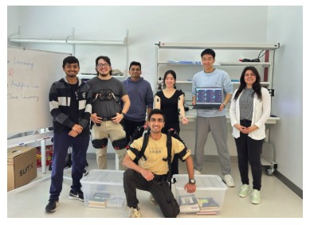
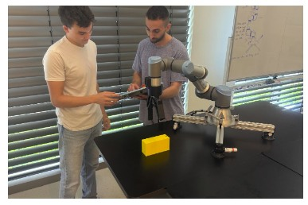
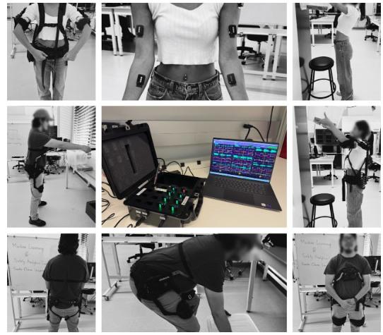

Human-centered AI for manufacturing
Physical and neuroergonomics, wearable sensing, multimodal learning and human–robot collaboration to understand and mitigate occupational risk.
EMG & IMUErgonomicsHuman–robot collaborationExoskeletons
Faculty · Research · Discovery
Associate Professor of Mechanical Engineering
Santa Clara University
I direct the Machine Learning & Safety Analytics (MLSA) Laboratory, where we develop human-centered AI and intelligent manufacturing systems. Our work combines wearable sensing, computer vision, data-driven modeling and human–robot collaboration to advance worker safety and manufacturing quality.
Research focus
Bringing AI and data-driven methods to both the people and the processes that shape modern manufacturing.
Physical and neuroergonomics, wearable sensing, multimodal learning and human–robot collaboration to understand and mitigate occupational risk.
Computer vision, synthetic data generation and machine learning for defect detection, process monitoring and more reliable manufacturing processes.
Updates
Selected research and academic milestones.
Recent work includes wafer scratch inspection with synthetic data and YOLO models, and wearable sensing for fatigue and exoskeleton evaluation.
Participating as senior personnel in an NSF Future Manufacturing research project on AI, extended reality and human–robot collaboration at metal recycling plants.
Principal Investigator of an SCU CBL STEM Research Grant supporting multimodal ergonomic risk assessment during human–robot collaboration.
Joined Santa Clara University's Department of Mechanical Engineering as Associate Professor, following an appointment in General Engineering.
Selected scholarly work
Organized by year and topic. For the latest citation record, visit Google Scholar ↗.
Research support
Grant totals refer to the overall project unless otherwise stated.
Senior personnel · AI, extended reality and human–robot collaboration for manufacturing at metal recycling plants · 2025–2029
Principal Investigator · Real-time multimodal ergonomic risk assessment for human–robot collaboration · $15,000 · 2026–2027
Co-Investigator · Synthetic data generation and deep learning for semiconductor process monitoring · 2023–2024
Cross-disciplinary studies connecting experimental engineering, machine learning, sensing, and practical manufacturing challenges, with student research participation at undergraduate and graduate levels.
Open science
Research resources from the MLSA Laboratory. Dataset DOI links will be added as individual releases become public.
This page does not imply that participant-level recordings or unpublished research data are publicly available. Add only approved datasets, licensing terms and actual repository DOI links.
People
The students and researchers of the MLSA Laboratory.
People & place
The Machine Learning & Safety Analytics (MLSA) Laboratory is located in SCDI 1316 at Santa Clara University.



Santa Clara University
Santa Clara University
San José State University
Ph.D. minor in Statistics · Iowa State University
Interested in research spanning machine learning, intelligent inspection, occupational ergonomics and human–robot collaboration? Send an email describing your interests and relevant experience.
Email the lab →Education
Courses spanning manufacturing, human factors, data science and machine learning.
Previously taught courses at San José State University include data science in industrial systems, lean manufacturing, design of experiments, facilities planning and research methods.